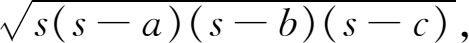

4．赫伦关于面积和体积的工作
赫伦生活在公元前100年到公元100年之间的某段时期，此人不仅从数学史的角度看非常值得注意，而且也可显出亚历山大时期的数学特色。普罗克洛斯称赫伦为mechanicus，这mechanicus的意思可能相当于今天的机械工程师，并把他和他的老师发明家克泰西比乌斯（Ctesibius）放在一起讨论。赫伦又是个优秀的测绘人员。
赫伦工作的突出之点是他把严密的数学同埃及人的近似方法和公式融合在一起。一方面他写过欧几里得著作的一本评注，采用阿基米德（他确乎常常提到他）的准确结果，并在他自己的创作中证明欧几里得几何的一些新定理。另一方面他关心应用几何与力学，毫无顾虑地给出各种各样近似结果。他大胆使用埃及人的公式而且他的许多几何在性质上也有埃及人的风格。
在他的《量度》（Metrica）与《几何》（Geometrica）（后者我们只是通过别人根据他著作而写的一本书获知的）中，赫伦给出了求许多图形的平面面积、曲面面积和体积的定理。这些书里的定理并不是新的。关于曲边形，他利用阿基米德的结果。此外他还写了《测地术》（Geodesy）和《体积求法》（Stereometry），也是论述前两书中那些内容的。在所有这些著作中，他主要关心数值结果。
在他讲测地术的《经纬仪》（Dioptra）一书中，赫伦指出怎样求一点到一不可到达点的距离以及可望而不可及的两点间的距离。他又指出怎样从一给定点向一不可达直线作垂线，以及怎样无需进入一块土地而求出其面积。这种做法的例子是三角形的面积公式

这里a，b，c是三边，s是周边的一半。这公式人们归功于他，但实际是属于阿基米德的。公式出现在他的《测地术》中并在《经纬仪》和《量度》两书中有一个证明。在《经纬仪》一书中他指出怎样同时从山的两头开挖直的隧道。
虽然赫伦的许多公式是证明了的，但也有许多是未加证明的，而且也有许多近似公式。例如他在给出上述准确的三角形面积公式的同时又给出一个不准确的公式。赫伦之所以用许多埃及人的公式，原因之一是准确公式里有平方根和立方根，而测绘人员不能作这些运算。事实上，纯几何同测地术或测量术是有区别的。面积和体积的算法属于测地术，而测地术并不是普通高等教育的一部分。它是教给测绘人员、泥瓦匠、木匠和其他工匠的。赫伦继承和丰富了埃及人的测地科学这一点是毋庸置疑的；他关于测地术的著作几百年间一直被人们使用。
赫伦把他的许多定理与法则用于设计戏院、宴会厅和浴堂。他在应用方面的著述有《机械学》（Mechanics），《投石炮》（The Construction of Catapults），《度量》（Measurements），《枪炮设计》（The Design of Guns），《压缩空气的理论和应用》（Pneumatica）以及《制造自动机的技术》（On the Art of Construction of Automata）。他作出了水钟、测量仪器、自动机、起重机和作战武器的设计。